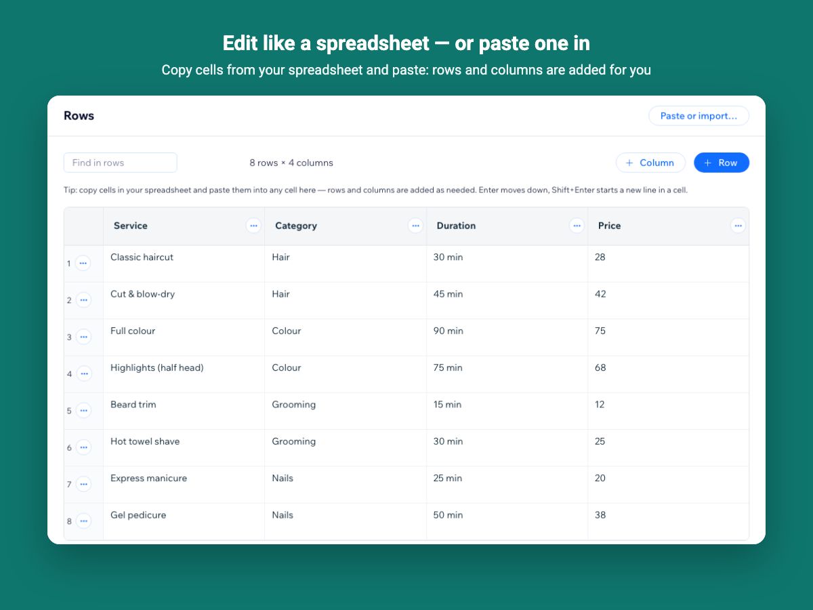
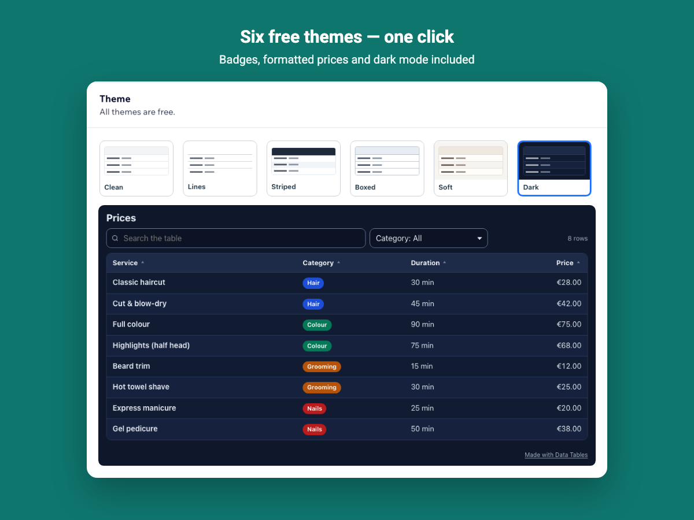

How to add a searchable table to a Wix site
A plain text table is hard to read once it has more than a dozen rows. A table with search, filters and sorting lets visitors find the one class, product or price they came for.
1. Install Data Tables
Add the app from the Wix App Market. Its dashboard opens with a sample class timetable so you can see every feature before entering your own data.
2. Create the table
Click New table and start from your own data or from an example: price list, product specifications, league table, team directory, event line-up or availability list. To use a spreadsheet you already have, select the cells there, copy them and paste into any cell of the editor — rows and columns are added for you. A CSV file can be opened the same way.

3. Choose column types
On the Columns tab, pick how each column is read: numbers and prices sort by value, dates sort by calendar, links become buttons, badges get colors and can be filtered. Your cells are never changed — the type only decides how they are shown and sorted.
4. Pick a look
Choose one of six themes on the Design tab, your accent color and text size. The preview shows the desktop and phone views as you change them.

5. Place it on a page
In the Wix Editor, add the Data Tables widget to a page, pick the table in its settings, and publish. Switch the table to Live in the dashboard when it is ready.
See it in the Wix App Market